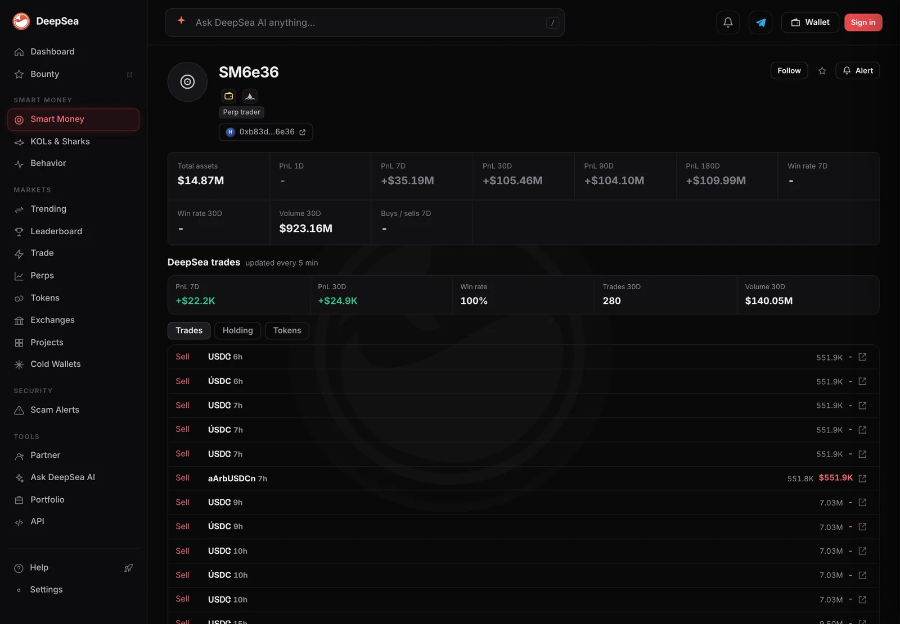

Two sharks pulled $18.5 million of USDC from Aave on Arbitrum in a day. Both now hold none
The No. 2 trader on DeepSea's smart money board took out its last $10.05 million. An unlabeled wallet withdrew $8.46 million. Arbiscan shows both balances at zero.
Key points
- DeepSea's 24-hour shark feed shows $18.52 million of Aave's Arbitrum USDC deposit token sold and none bought, in 3 trades by 2 wallets: the biggest shark sale on any chain.
- SM6e36, No. 2 on DeepSea's 7-day smart money board, withdrew $9.50 million at 8:27 a.m. ET and $551,869 at 5:50 p.m. ET on November 17.
- An unlabeled wallet withdrew 8.46 million USDC at 5:05 p.m. ET. Arbiscan shows the Aave withdrawal, and zero left in both wallets.
 What DeepSea's data shows
What DeepSea's data shows
DeepSea tags large, active wallets as sharks. Its 24-hour shark feed, read at 12:35 a.m. ET, puts aArbUSDCn at the top of the sell list: $18.52 million sold, $0 bought, by 2 wallets in 3 trades. aArbUSDCn is the receipt Aave, the lending app, gives for USDC deposits on Arbitrum. Selling it means taking the USDC back out. The next biggest net shark sale on any chain was Aave's Avalanche USDC token at $1.72 million.
The two wallets:
- SM6e36 (0xb83d...6e36): 9,496,292 aArbUSDCn at 8:27 a.m. ET, valued at $9.50 million, and 551,811 at 5:50 p.m. ET, valued at $551,869. It ranks No. 2 on DeepSea's 7-day smart money board at +$35.19 million, with $14.87 million in total assets. It trades futures on Hyperliquid.
- 0x4fc1...9a43, which DeepSea has not labeled: one sale of 8,455,797 aArbUSDCn at 5:05 p.m. ET, the first trade DeepSea has logged for it.
This is a follow-up. On November 17 we reported that SM6e36 had sold $10 million of the token and that its page still listed $10.05 million. That $10.05 million is the amount it has now withdrawn.

Data: DeepSea (desea.io), checked November 18, 2026, 12:35 a.m. ET.
What Arbiscan shows
Data from DeepSea and Arbiscan. Arbiscan's record of the unlabeled wallet's trade shows a call to Aave: Pool V3 at 5:05:43 p.m. ET. It burned 8,455,796.88 aArbUSDCn and paid out 8,463,320.57 USDC. The gap, 7,523.69 USDC, is interest the deposit had earned.
Arbiscan shows a balance of 0 aArbUSDCn for both SM6e36 and 0x4fc1...9a43. It also lists 196.41 million aArbUSDCn in total, so the day's $18.52 million equals about 9.4% of what is still deposited this way. Neither DeepSea nor the pages we opened show where the USDC went next.
How Aave withdrawals work
Aave lends out deposited coins and pays depositors interest. Its receipt tokens rise in number as interest builds, which is why the wallet got back slightly more USDC than the receipt it handed in. A withdrawal is not a sale of USDC, and it says nothing on its own about what the owner plans next. Shark and smart money are DeepSea's labels for large or profitable wallets; the owners are unknown.

LC Insight analysis
This section is our reading of the facts above, not a statement of fact.
- We think the clean exit to zero looks like planned cash management rather than a reaction to Aave itself. Nothing in the data points to a problem at Aave.
- SM6e36's big profits sit in its Hyperliquid futures account, while the same address on Arbitrum held its Aave cash. Watching where the $10.05 million lands may say more than the withdrawal.
- One day's $18.52 million is large next to the 196.41 million left in this deposit token, so the two wallets were among its bigger users.
What's next
- Where the withdrawn USDC moves next
- Whether SM6e36 adds to Hyperliquid positions
- Whether the unlabeled wallet makes a second move
Disclaimer. This article is based on public information and the sources listed below as of the update time shown. It is for information only and is not investment, legal or tax advice. Figures may change as companies and authorities publish new data.
Sources
- DeepSea, 24-hour shark flow feed (read November 18, 2026, 12:35 a.m. ET)
- DeepSea, smart money board (read November 18, 2026, 12:38 a.m. ET)
- DeepSea, trader page SM6e36 (read November 18, 2026, 12:45 a.m. ET)
- DeepSea, wallet page 0x4fc1...9a43 (read November 18, 2026, 12:45 a.m. ET)
- Arbiscan, Aave withdrawal transaction (read November 18, 2026, 12:46 a.m. ET)
- Arbiscan, aArbUSDCn balance of SM6e36 (read November 18, 2026, 12:43 a.m. ET)
- Arbiscan, aArbUSDCn balance of 0x4fc1...9a43 (read November 18, 2026, 12:43 a.m. ET)